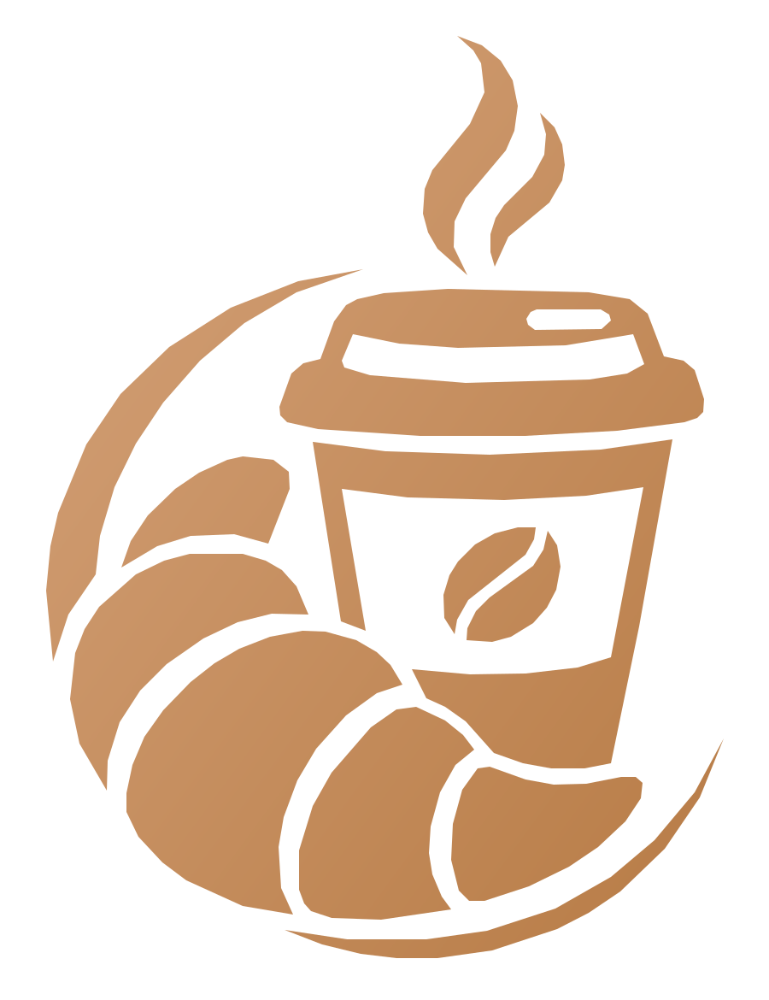
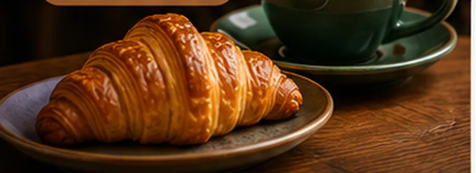
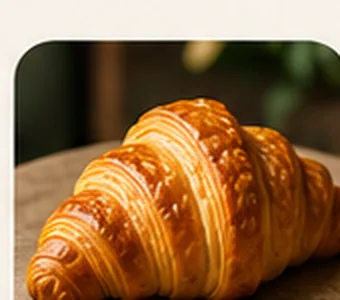
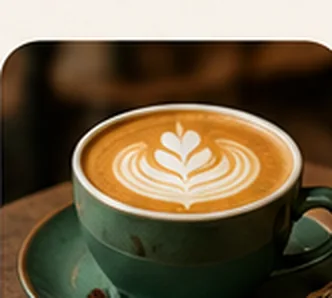

Menu
Escolha sua bebida ou favorito da casa.
Carregando curtidas...
Fotos conceituais e preços demonstrativos.

Bebidas artesanais, panificação fresca e um ambiente feito para você relaxar.
Ver o menu


Cardápio e preços ilustrativos para este protótipo.
NOSSA HISTÓRIA
A Coffee House nasceu de uma ideia simples: transformar a pausa para um café naquele momento que dá vontade de guardar na memória.
Inspirada na atmosfera das cafeterias e padarias que descobrimos pelo caminho, ela reúne cafés especiais, croissants e pequenos prazeres da vida. Um lugar imaginado para desacelerar, conversar e criar boas lembranças.
Inspirada nas pausas de viagem
Buenos Aires · Nova York · São PauloRevise seus itens antes da retirada.